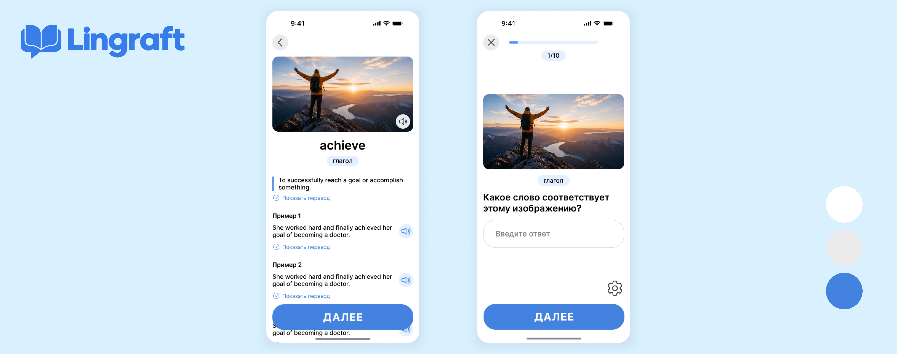
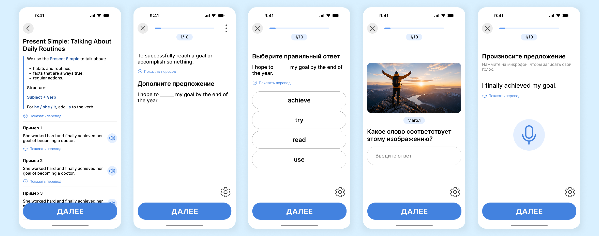
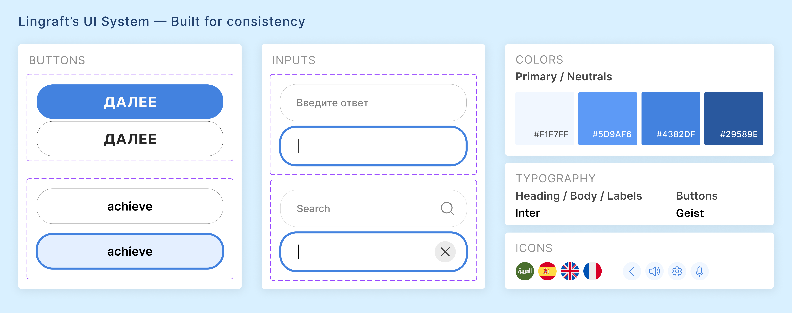
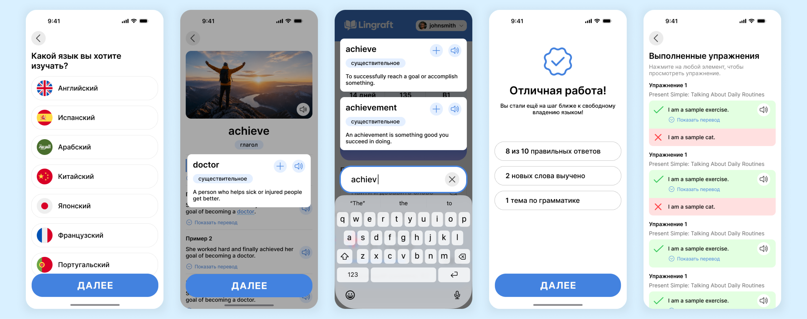

Making language learning feel simple

01 — Overview
| Role | UX/UI Designer |
|---|---|
| Tools | Figma |
| Status | MVP design completed — awaiting development |
Lingraft is a minimalist language-learning app concept designed to help learners reinforce their grammar and vocabulary knowledge alongside their existing language courses.
Working from a detailed product brief provided by a developer, I designed the mobile-first user experience, wireframes, interface, and reusable UI components in Figma.
02 — The Challenge
Making complex learning content feel simple.
The brief outlined a wide range of learning activities, from grammar lessons and vocabulary flashcards to interactive exercises and personalized revision.
My challenge was to translate these requirements into a consistent, intuitive experience while balancing the developer's vision with usability considerations.
03 — Research
I explored existing language-learning tools, including Duolingo, Anki, and Kwiziq, to understand different approaches to educational content and learning interactions.
This informal exploration helped shape a design direction focused on clarity, readability, and distraction-free learning.
04 — The Solution

One focused space for learning and revision.
Lingraft brings together structured grammar lessons, vocabulary flashcards, and varied practice exercises in a clean, cohesive interface.
Learners can access explanations, examples, translations, and audio support while reinforcing their knowledge through different types of activities.
05 — Design Process

Designing for clarity
I created consistent layouts and reusable components to accommodate different learning activities without introducing unnecessary complexity.
Clear content hierarchy, predictable navigation, and optional translations help learners focus on the material rather than the interface.
Encouraging progress without gamification
The product was intentionally designed without traditional gamification mechanics.
When the developer suggested removing the lesson completion screen, I advocated for retaining it to give learners a sense of accomplishment and a clear summary of their progress.
After discussing the reasoning behind this decision, we agreed to keep the screen.
06 — Final Design

The final Figma deliverables include high-fidelity mobile screens, learning and practice flows, and a reusable component system designed to support future development.
07 — What's Next?
The Lingraft design project is complete. Future opportunities include validating key user flows through usability testing and refining the experience based on user feedback.